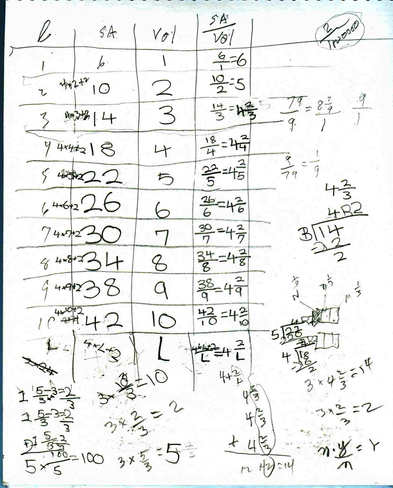
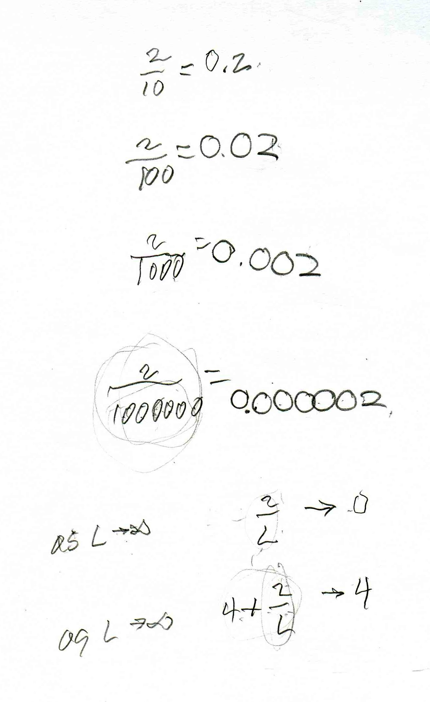
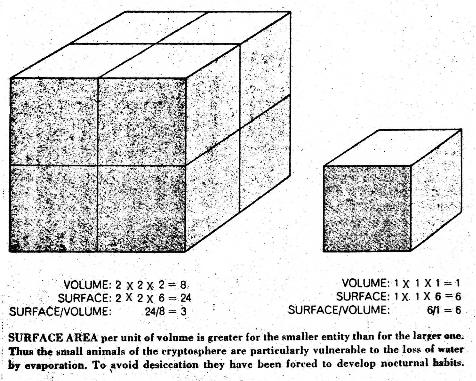

The ratio of surface area/volume of rods leads to an infinite sequence with a limit, shows why rats are noctunal animals, and why we grate cheese to put on spaghetti/Chapter 6
Nanako came with her Mum from Japan for a week during the summers of 2007 and 2008. Don talked to Nanako in 2008 about comparing things 1.) by subtraction, like if Don is 79 years old and Nanako is 9 years, old, how much older is Don than Nanako? Don is 79-9 = 70 years older than Nanako. and 2.) by ratio or division, like what's the ratio of Don's age to Nanako's or how many times as old is Don that Nanako? Don is 79/9 = about 9 times as old as Nanako.
They used the 10 different length Cuisenaire rods above, from the 1x1x1 white rod (1 cubic cm.) to the 1x1x10 orange rod (10 cubic cm.). Don had Nanako find the surface area of each rod - how many of one face of a white rod stamps the other rod (in square cm.), the volume of each rod - how many white rods fit in each of the others (in cubic cm.), then find the SA to Vol ratio (SA/Vol) for each rod.

Don asked Nanako to find a pattern to find the surface area from the length of the rod. She saw that the first SA was 6 and 2*3=6, then 2*5=10 and 2*7=14..but neither Don nor Nanako saw how the length was involved at that time. She also saw that the SA went up 4 each time and that the SA was 4 times the Length (the lateral area for each rod), + 2, for the 2 ends of every rod, so the SA was 4x1 + 2= 6, 4x2 + 2 = 10, and 4x3 + 2 = 14 and she generalized to SA = 4xL + 2. If you graph the SA vs the L of each rod, what would the graph look like? The Volume was simple, it was always equal to the same number of cubic cm. as the # of Length units.
In the process of getting the SA/Vol ratios Don and Nanako talked about the division, of like 14/3, which she wrote as 14R2. Don talked with her about sharing 14 cookies between 3 people- each person would get 3, with 2 cookies left over. With a picture above on the right, of the 2 left over cookies she realized each person would get 4 and 2/3 or 4 2/3 cookies.
Don made sure Nanako understood that if 14/3 = 4 2/3, then what was 3x 4 2/3? on her paper above near the bottom, you can see how Don did this by adding 4 2/3 three times. and they got into 3x2/3= 2, and 3x5/3 = 5 and n*Y/n = Y she wrote. Also Nanako (in the lower left corner above) did 3x5/3 = 5 an entirely different and wonderful way. For each of the 5/3 she put 1 (= 3/3), then thought (5-3)/3 = 2/3, so she thought of 5/3 as 1+2/3, added the 3 1's and 3 of the 2/3 to get 3 + 6/3= 3+2=5, the answer to 3x 5/3.
So for the length L of the rod, the SA = 4xL + 2, and the SA/Vol ratio is (4xL + 2)/L and dividing by L, this could be written as SA/Vol = 4 + 2/L. So they had an infinite sequence of ratios (L could get bigger and bigger). Don asked Nanako, what happens to 2/L as L gets bigger and bigger. The discussion went like this:

Why was Don doing this with Nanako? Besides the fact that 1.) they got an infinite sequence which approaches a limit, 2.) she found the surface area of a rectangular solid, 3.) she had to divide to get a mixed number, 4.) she multiplied a whole number by a mixed number, 5.) she looked for and found patterns in the surface area and the SA/Vol ratios.
They talked about the fact that a small animal (the white rod) has the largest SA/Vol ratio. Now what does the SA have to do with anything.., actually the SA is a measure of the skin area. When the small animal is out in the sun, it loses moisture too fast and can die. The picture below is from an old Scientific American article. The word desiccation means to dry up.

This shows that rodents, to stay alive, become nocturnal animals!
This idea also explains why we use grated cheese on spaghetti instead of a big glob of cheese. The grated cheese, with a much larger surface area, melts easier, and can get all around the spaghetti- mmmm good!
Fine job Nanako!
See what Nanako did with Don in 2007 and in 2008.
See infinite sequences, functions, and graphs on the map.